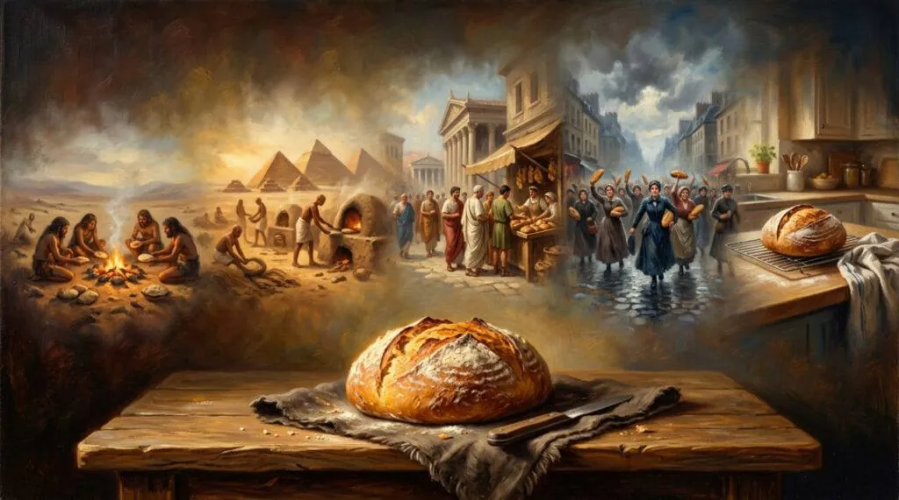
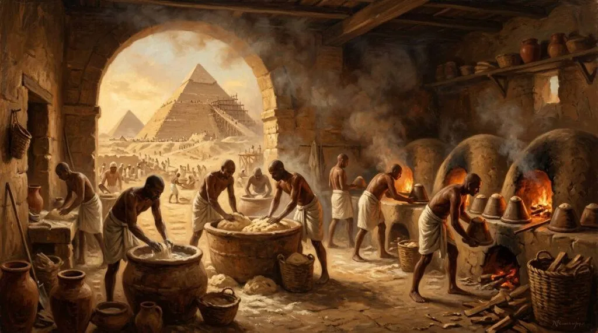
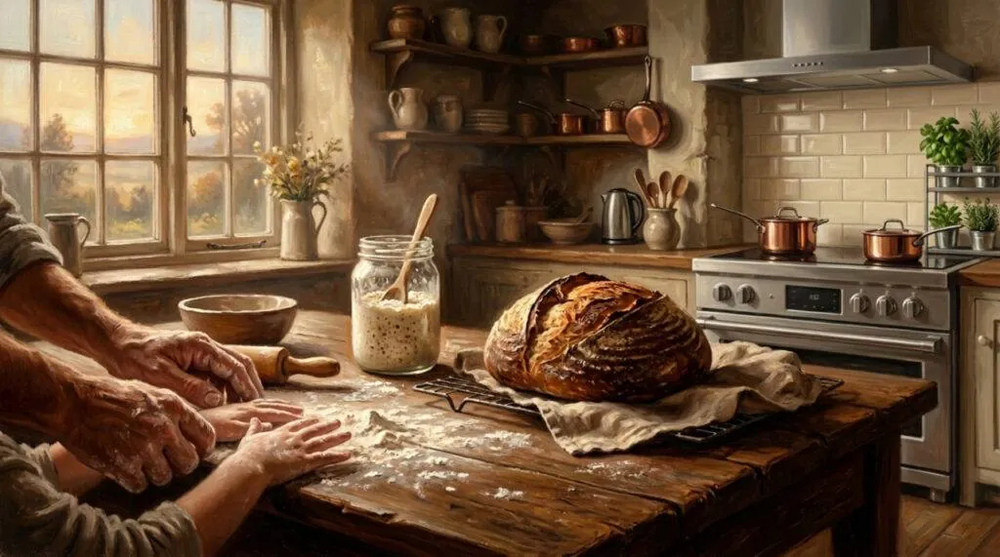
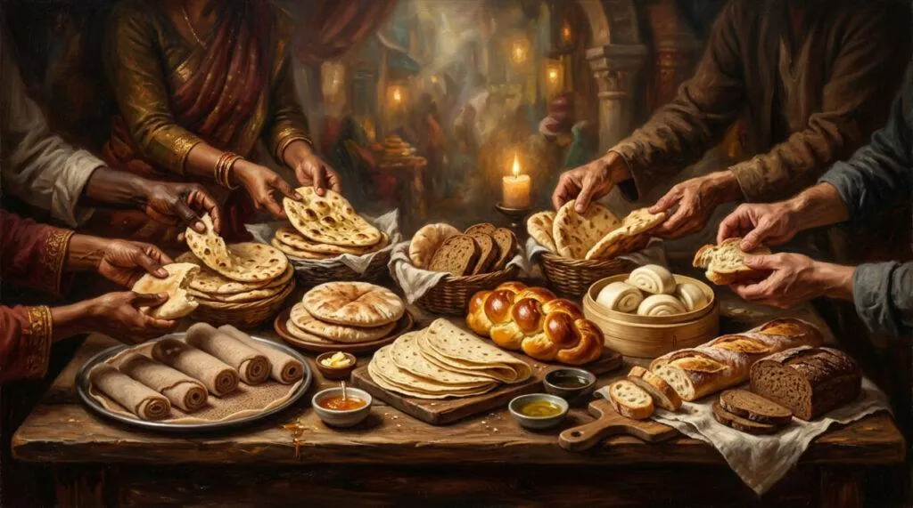

From desert fire pits to factory slices, bread carried human history.

Introduction
The first bread was probably not beautiful.
It was not golden like a French baguette. It was not soft like a supermarket loaf. It was not braided, sliced, wrapped, or blessed at a temple table.
It was burned at the edges, rough in the mouth, and made from wild seeds crushed between stones. But when someone in the Jordan desert tasted it more than 14,000 years ago, they touched one of the oldest human ideas: take what the earth gives you, add water, add fire, and make it into something better.
That is the strange power of bread.
Bread is made from almost nothing. Flour. Water. Heat. Sometimes yeast. Sometimes salt. Sometimes only patience. Yet this simple food helped people settle down, feed cities, build pyramids, survive winters, and challenge kings.
It became money in Egypt. It became politics in Rome. It became a cry for justice in Paris. It became an industrial product in the twentieth century. And in 2020, when millions of people were locked inside their homes, it became comfort again.
What is striking here is that bread never needed to look powerful. It became powerful because every human body understands hunger.
This is the history of bread, but really, it is the history of how ordinary things become the center of human life.
Bread Through Time
Eight moments, one loaf — from a burned crust in the desert to the bread on your table today.
The First Bread
In the Jordan desert, hunter-gatherers grind wild grain and bake flatbread over fire — thousands of years before farming exists.
Farming Begins
In southwest Asia, people domesticate wheat and barley. For the first time, food can be planned, stored, and promised.

The Loaf That Built the Pyramids
Egypt's bakeries at Giza work on an industrial scale. Bread and beer are wages — the food that raises the stones.
Rome's Grain Promise
Rome learns that hungry people are dangerous. The state supplies grain to its citizens to keep the peace.
The March for Bread
Parisian market women march to Versailles through the rain. Bread prices help light a revolution.
The First Sliced Loaf
Otto Rohwedder's machine slices and wraps bread. Within five years, sliced outsells unsliced in America.
Bread in Minutes
The Chorleywood process makes a loaf in a fraction of the time — cheap, soft, and quietly costly.

The Slow Comeback
After centuries of speed, millions of people return to slow sourdough — bread made the patient way again.
The Burned Crumbs Found in the Desert
The oldest bread we know was not found in a bakery. It was found in a fireplace.
At Shubayqa 1, an archaeological site in the Black Desert of northeastern Jordan, researchers discovered tiny charred food remains left by Natufian hunter-gatherers. The pieces were not impressive at first glance. They looked like burned crumbs. But under the microscope, they told a much larger story.
A team led by archaeobotanist Amaia Arranz-Otaegui studied 24 charred remains and identified them as bread-like products made from wild cereals and other plants. The date was the shock: about 14,400 years ago. That places bread roughly 4,000 years before the widespread rise of farming in that region (see Source #1).
This is the part many people miss. Bread did not simply appear after agriculture. Bread may have helped make agriculture desirable.
The Natufians lived in the Levant, in the region we often connect with the Fertile Crescent. They were not farmers in the later village-and-field sense. They hunted, gathered, collected wild grains, and in some places built semi-permanent stone houses. They were living in a world between movement and settlement.
Imagine one of them kneeling beside a fire. She crushes wild wheat or barley between stones. She mixes the powder with water. She presses the paste into a flat shape. Then she places it near hot ash.
There is no recipe. No written language. No one says, “This is bread.” But something happens. The paste changes. It becomes warmer, firmer, easier to carry, easier to share.
If you stop and think about that for a second, the discovery feels almost impossible. A person had to gather the right seeds, grind them, mix them, heat them, and notice the result.
The bread from Shubayqa 1 was probably a flatbread. It did not rise like a loaf. It was likely dense and gritty. It may have included wild einkorn, barley, oats, and plant tubers. But it changed the human relationship with grain.
Before bread, grain was something you chewed. After bread, grain became a meal.
This matters because grain is patient food. Meat spoils. Berries vanish with the season. Grain can be stored, carried, ground, and turned into bread when needed. That simple fact helped humans think differently about time.
The same desire to turn wild plants into reliable food later shaped the birth of farming in the Fertile Crescent. And for readers who want to trace the scientific discovery, researchers described the finds as the earliest direct evidence of bread-making
Bread began, not as a luxury, but as a question: can hunger be made less frightening tomorrow than it is today?
How Farming Turned Grain Into a Daily Promise
The first bread was a spark. Farming turned that spark into a system.
Around 10,000 years ago, communities in southwest Asia began domesticating crops such as wheat and barley. This change did not happen overnight. It was slow, uneven, and full of risk. But once humans began planting grain instead of only gathering it, bread became something new.
It became predictable.
That may sound boring, but predictable food is one of the most revolutionary ideas in human history. A family that can plant grain can stay near the field. A village that can store grain can survive a bad season. A ruler who can count grain can collect taxes. A city that can bake bread every day can grow larger than a hunting camp ever could.
Bread was not the only reason civilization grew. That would be too simple. But bread made civilization easier to imagine.
In the Fertile Crescent, early farmers worked with einkorn, emmer wheat, barley, lentils, peas, and other plants. Over generations, they selected seeds that were larger, easier to harvest, and more useful. The wild plant became a human partner.
This partnership had a cost. Farming meant harder labor. It meant bending over fields, watching the weather, protecting stores from pests, and depending on a harvest that could fail. Hunter-gatherers often ate a wider range of foods. Farmers sometimes ate more calories but less variety.
The evidence here is not a clean fairy tale. Agriculture gave humans security, but it also gave them long workdays, inequality, disease, and dependence on one or two staple crops.
Still, grain changed everything because it could become bread.
Picture an early village at dawn. Smoke rises from small houses. Someone carries a basket of grain. Someone else grinds it on a stone, hour after hour. A child watches dough being pressed flat. The smell of warm bread moves through the settlement before the sun is high.
That smell is social technology. It tells people: we are still here. We have food. We belong to this place.
Named individuals are lost to us from this deep period. We do not know the name of the first farmer who saved the best grain for next year’s planting. We do not know the name of the first baker who learned that a hotter stone made better bread. But archaeologists such as Dorian Fuller at University College London have helped show how plant remains can reveal these forgotten choices over thousands of years (see Source #3).
To put the scale in perspective, modern bread wheat later became one of the most important crops on earth. The Food and Agriculture Organization tracks cereals because grains still sit at the center of global food security. Even now, wheat remains one of the world’s most important staple foods (see Source #9).
Bread made grain intimate. Farming made bread dependable. Together, they gave people a reason to settle, store, count, trade, and build.
The story also connects naturally with the history of wheat and ancient grains, because bread is never just about baking. It is about the plant decisions humans made before the dough ever reached the fire.
The Egyptian Loaf That Fed the Builders of Stone
In Egypt, bread became more than food. It became administration.
The pyramids were not built by hungry ghosts. They were built by organized human labor, and that labor had to be fed every day. At Giza, archaeologists from Ancient Egypt Research Associates found evidence of large-scale bread production near the workers’ settlement. These were not cozy little bakeries. They were part of a state system.
Ancient Egyptian bakers used ceramic bread molds called bedja. Some of the larger molds weighed up to 12 kilograms, or about 26.5 pounds. AERA reports that fragments of these bread pots appear in huge numbers at the Lost City site near Giza (see Source #4).
This is where bread becomes visible as infrastructure.
We often picture pyramids as stone, sweat, and royal power. But behind that monument was a daily rhythm of grinding, mixing, baking, brewing, carrying, and distributing. Bread and beer formed the basic diet and ration system for workers in major royal projects.
In 1991, AERA excavated two bakeries at Giza. The site included vats, ash layers, hearths, and rows of depressions where preheated bread molds may have been placed. The bakers worked in heat, smoke, and dust. The bread was probably made from emmer wheat and barley, not the soft modern wheat many people know today.
There is a quiet irony here. The pyramids still look eternal, but the food system that made them possible was made of perishable things: grain, beer, bread, wood smoke, and human hands.
Ancient Egyptian bakeries also show how bread crossed into religion. Pharaohs and high-status Egyptians placed bread in tombs for the afterlife. Models of bread making appear in tomb art. Bread was an offering to gods and a ration for workers. It belonged to both the sacred and the sweaty.
A named figure helps us see this world more clearly: Mark Lehner, an Egyptologist associated with AERA, has spent decades studying the Giza Plateau and the lives of the people who built the pyramids. His work helped shift public imagination away from simple myths of slave labor and toward a more complex picture of organized communities, skilled workers, and enormous food logistics.
The numbers matter. The Old Kingdom period, roughly 2575 to 2134 BC, left scenes and physical evidence of large bread production. At Giza, AERA’s experimental archaeology tried to recreate ancient baking using emmer and barley flour. The results were not light, modern loaves. They were heavy sourdough-style breads, difficult to perfect, and very different from the bread most readers eat today.
What’s striking here is not that Egyptians ate bread. Everyone expects that. The striking thing is that bread became a tool of management. Feed the workers, and you can move stone. Organize grain, and you can organize labor. Control ovens, and you can build monuments.
Readers exploring Egyptian daily life may later connect this section with how beer fed ancient workers, because bread and beer often belonged to the same food world. The British Museum also notes that bread and beer production were closely linked
The pyramid is the famous object. But the loaf may have been the quieter miracle.
Rome Learned That Hungry People Are Dangerous
Rome understood a hard political truth: bread can calm a city, and the lack of bread can break it.
By the late Roman Republic and the Roman Empire, grain supply was a matter of state survival. Rome was huge by ancient standards, with hundreds of thousands of people depending on imported grain. Ships carried wheat from Sicily, North Africa, and Egypt. Officials tracked supply. Politicians watched prices. Crowds watched everything.
The Roman phrase panem et circenses, often translated as bread and circuses, came from the poet Juvenal, who lived in the late first and early second century AD. He used the phrase as a criticism. In his view, the Roman people had traded serious civic power for food distributions and entertainment.
The line lasted because it captures something uncomfortable. A government that feeds people can win loyalty. A government that fails to feed them may face panic.
Gaius Gracchus, a Roman reformer who lived from 154 to 121 BC, pushed grain laws that helped provide subsidized grain to citizens. Later leaders used grain distribution as a political tool. Julius Caesar, Augustus, and later emperors all had to think about food supply because Rome’s crowds were not an abstract idea. They were people standing in lines, watching prices, and asking whether the state still worked.
Bread in Rome was not only a meal. It was a public promise.
The city also had professional bakers. Roman bakeries used mills, ovens, and organized production. In Pompeii, preserved by the eruption of Mount Vesuvius in AD 79, archaeologists have found bakeries with mills and ovens still visible. One baker, Marcus Vergilius Eurysaces, even built a famous tomb in Rome shaped with round forms that may represent grain measures or bread-making equipment. His tomb is a reminder that baking could create status, money, and identity.
History rarely lets a story stay clean. Bread fed the poor, but it also helped rulers manage them. It was care and control at the same time.
Rome also spread bread culture through roads, armies, cities, and trade. Soldiers carried grain. Towns built ovens. Urban life required regular supply. The empire’s stomach had to be fed before its borders could be defended.
That is why the history of bread belongs beside the roads and trade routes of the Roman world. Food moved along the same systems as soldiers, taxes, letters, and laws.
The modern reader should not laugh too quickly at Rome. Every city still depends on invisible food systems. Trucks replace ships. Supermarkets replace grain doles. But the fear is old. When bread disappears, politics enters the bakery.
The Roman lesson is simple, and rulers have never forgotten it: hunger turns private suffering into public danger.
The Rainy March That Made Bread a Revolution
On October 5, 1789, the women of Paris began walking.
They were not marching for an idea written in a book. They were marching because bread had become too expensive, too scarce, and too central to ignore. Many were market women. Some carried kitchen knives, sticks, and other weapons. Rain fell as the crowd moved toward Versailles, about 10 to 12 miles away.
At the center of the story stood King Louis XVI, who ruled France from 1774 to 1792, and Queen Marie Antoinette, who became the symbol of royal distance from ordinary hunger. The famous phrase “Let them eat cake” is almost certainly not something she said. The line existed before her and was attached to her later because people already believed the monarchy did not understand them.
That false quote matters. Sometimes a story becomes believable because it expresses what people feel, even when it fails as evidence.
In Paris, bread was not a side dish. It was the main food of working people. When bread prices rose, families did not simply switch to something else. They suffered. In many accounts of eighteenth-century France, bread could swallow most of a poor family’s income during crisis periods. Hunger became a political language everyone understood.
The Women’s March on Versailles began around the markets of Paris and soon merged with wider revolutionary demands. The crowd went first to the Hôtel de Ville, the city hall, then to Versailles. By the next day, the royal family was forced to return to Paris. The move changed the French Revolution. The king was no longer distant at Versailles. He was physically closer to the people and politically trapped by the capital.
The Palace of Versailles itself describes the march as a key moment in the French Revolution (see Source #7). World History Encyclopedia also identifies it as one of the defining events of the early revolution (see Source #6).
What I find most powerful here is not the palace scene. It is the road. Thousands of ordinary women walking through rain because the price of bread had crossed the line between hardship and humiliation.
One named woman often connected with revolutionary bread politics is Pauline Léon, born in 1768, a Parisian chocolate maker and later radical activist. She was not the sole leader of the October march, but she represents the working women whose political voices grew louder in the revolutionary years. Bread prices pushed many women into public action because women were often responsible for feeding families.
Bread became justice because it stood between children and hunger.
This section could naturally link to the French Revolution and food crisis, because the revolution was not only about philosophy. It was about stomachs, wages, harvests, and trust. Readers can also examine the march on Versailles through the palace’s own historical summary.
A loaf of bread did not cause the French Revolution by itself. But in 1789, bread carried the anger of a city.
The White Loaf That Hid the Cost of Progress
For centuries, white bread meant status.
The whiter the flour, the more refined it looked. Darker bread was associated with peasants, workers, and poverty. Then machines changed the meaning of white bread.
In the late nineteenth century, steel roller mills spread through Europe and North America. Unlike older stone grinding, roller milling could separate the wheat kernel into parts more efficiently. The white endosperm became fine white flour. The bran and germ, which contain fiber, oils, vitamins, and minerals, were removed.
Suddenly white bread became cheaper and more widely available. What had once been a luxury moved toward the everyday table.
It looked like progress. In one sense, it was. Industrial milling made flour more consistent, more transportable, and easier to store. It helped feed growing urban populations. But the new white flour had a problem: much of the nutritional value had been stripped away.
This is the part that does not add up cleanly. We made bread prettier, softer, and cheaper, then had to invent ways to put some of the lost nutrition back.
In the twentieth century, several governments encouraged or required flour enrichment or fortification, adding nutrients such as iron and B vitamins back into flour. The details vary by country, but the pattern is clear: industrial bread solved one problem and created another.
Then came Otto Frederick Rohwedder.
Rohwedder was born in 1880 in Iowa. He was trained in optics, worked as a jeweler, and became obsessed with a machine that could slice bread automatically. Bakers were skeptical. Sliced bread might go stale faster. Consumers might not care. Then, in 1917, a factory fire destroyed his prototype and blueprints.
Many inventors would have stopped there. Rohwedder did not.
By 1927, he had designed a machine that could both slice and wrap bread. On July 7, 1928, the Chillicothe Baking Company in Missouri sold the first commercial sliced loaf using his machine, marketed as Kleen Maid Sliced Bread. The Lemelson-MIT Program notes that demand grew quickly, and by 1933, bakeries were selling more sliced bread than unsliced bread in the United States (see Source #8).
It’s almost funny that one of the most famous phrases about modern progress, “the greatest thing since sliced bread,” comes from a problem bakers were not sure people wanted solved.
Then Britain added another industrial chapter. In 1961, researchers at the British Baking Industries Research Association developed the Chorleywood Bread Process. It used high-speed mixing and other techniques to reduce production time and make soft industrial loaves at scale. Campden BRI explains that this process helped large bakeries produce thousands of loaves per hour and reduced total production time greatly compared with traditional slow fermentation (see Source #9).
This history belongs beside the rise of processed food, because bread became a perfect example of the modern food bargain: cheaper, faster, softer, longer-lasting, but often less connected to grain, fermentation, and flavor.
Progress did not destroy bread. But it did teach us to confuse softness with goodness.
Every Culture Found Its Own Way to Break Bread
Bread is not one food. It is a family of answers.
In Ethiopia and Eritrea, injera is made from teff and fermented into a large, spongy flatbread. It is food, plate, and utensil at the same time. In India and Pakistan, roti, chapati, paratha, and naan show how flatbreads can carry daily life across regions, religions, and classes. In China, mantou and baozi prove that bread does not need an oven. Steam can do what fire does differently.
In Mexico and Central America, tortillas made from maize carry a story as deep as wheat bread. The Maya creation story in the Popol Vuh says humans were made from maize. That is not a small detail. It means bread-like food can become identity itself.
In Jewish tradition, challah marks the Sabbath table. In Christianity, bread becomes a central sacred symbol in the Eucharist. In many Slavic, Middle Eastern, and Central Asian traditions, bread and salt welcome guests. Across cultures, to share bread is to say: for this moment, you are not outside the circle.
The villain of this story is not modern bread, or ancient bread, or white bread, or flatbread. The danger is forgetting how many forms bread can take.
One useful named figure here is Lionel Poilâne, the French baker born in 1945, who helped revive respect for traditional sourdough-style bread in Paris during the late twentieth century. His bakery became famous for large country loaves at a time when industrial bread was spreading. He was not inventing bread, of course. He was defending memory.
The numbers show the variety. Injera fermentation can take 2 to 3 days. German pumpernickel may bake slowly for many hours. A baguette in France is often tied to strict expectations of weight, crust, and freshness. A tortilla can be cooked in minutes on a hot surface. These breads are not minor variations. They are different ways of organizing daily life.
Bread also creates public space. The bakery is one of the oldest social businesses. People gather there before work, after prayer, on market days, during festivals, and in crisis. In many towns, the baker knows more about the rhythm of the community than the mayor.
The story of bread is also the story of migration. A loaf travels with people. Jewish challah, Italian ciabatta, French baguettes, Mexican tortillas, Indian naan, Ethiopian injera, Chinese mantou, and Middle Eastern pita all carry geography in their texture.
For HitoCast, this section can support future internal links such as the history of tortillas, the history of tea houses and coffee houses, and the history of rice, because staple foods rarely travel alone. They move with trade, empire, religion, family, and memory.

The most human thing about bread is not that everyone makes the same loaf. It is that everyone found a way to make grain feel like home.
The Sourdough Comeback and the Questions Still Rising
In 2020, many people met bread again.
During the COVID-19 pandemic, kitchens turned into small bakeries. Flour vanished from store shelves in some places. Social media filled with sourdough starters, failed loaves, proud loaves, dense loaves, beautiful loaves, and children covered in flour.
People were not only making food. They were looking for control in a frightening time.
A sourdough starter is a small ecosystem of wild yeasts and lactic acid bacteria. It needs feeding. It changes with temperature, flour, water, and time. In a world of instant messages and fast delivery, sourdough asks the baker to wait. That waiting became part of its appeal.
There is something quietly moving about that. After centuries of trying to make bread faster, millions of people found comfort in making it slower.
The comeback also opened older questions. Are ancient grains such as einkorn, emmer, and spelt better for some people? Is long fermentation easier to digest? Can local grain systems reduce dependence on fragile supply chains? How should we balance cheap food with better nutrition, fair labor, and healthier soil?
We should be careful here. Not every ancient grain is automatically better. Not every sourdough claim is proven. Not every industrial loaf is bad. Food history becomes lazy when it turns the past into purity and the present into poison.
Still, the questions matter.
Bread sits inside climate, agriculture, labor, nutrition, and culture. Wheat farming depends on water, soil, seed systems, fertilizers, transport, and global prices. When war or drought disrupts grain supply, bread prices can still become political. The old story has not disappeared. It has become global.
One modern figure connected to this shift is Vanessa Kimbell, a baker and educator who has helped popularize sourdough and discussions around bread, gut health, and fermentation in the United Kingdom. Another is Chad Robertson of Tartine Bakery in San Francisco, whose 2010 book helped shape a new generation of home bakers and artisan bread fans.
The debate is still open. Archaeologists still study what the first breads were made from. Food scientists still examine fermentation. Farmers still test old and new wheat varieties. Bakers still argue about time, flavor, and technique.
The evidence is thin in some places, and that is okay. Bread is old enough that some of its first chapters were burned, eaten, or lost.
For future reading, this section can point to the history of sourdough and the future of food and farming. It also connects with public data from global food and agriculture statistics, because bread is personal at the table but global in the field.
Bread keeps rising because humans keep asking the same questions: What will feed us? What will connect us? What can we make from almost nothing?
What a Loaf of Bread Teaches Us
Five quiet lessons from the oldest food we still share.
- Civilization starts small. It began with simple acts repeated carefully — grinding, mixing, waiting, feeding.
- Bread is a promise. Farming taught people to plant today for a harvest months away. Bread is trust in tomorrow, baked.
- Hungry people are dangerous. Rome gave grain to keep the peace. In 1789, Paris marched for bread. Feed people, or face them.
- Faster is not always better. Machines made bread quick and cheap — and millions of people chose to slow down again with sourdough.
- Every table speaks the same language. Every culture found its own loaf, but breaking bread together means the same thing everywhere.
Frequently Asked Questions About Bread
When was bread first invented?
The oldest direct evidence of bread comes from Shubayqa 1 in northeastern Jordan and dates to about 14,400 years ago. The people who made it were Natufian hunter-gatherers, not full farmers. This means bread is older than agriculture as we usually imagine it. Early bread was probably a flatbread made from wild grains and other plants, then cooked near fire.
Who invented bread?
We do not know the name of the person who invented bread. It likely developed through many experiments by prehistoric people who gathered wild grains, crushed them, mixed them with water, and cooked the paste near fire. The earliest known evidence points to Natufian communities in the Levant. Bread was probably not one sudden invention, but a discovery refined over generations.
Why was bread so important in ancient Egypt?
Bread was important in ancient Egypt because it fed workers, supported state labor systems, and carried religious meaning. Pyramid workers received bread and beer as key rations. Bread also appeared in tombs and offerings because Egyptians believed the dead needed food in the afterlife. It was daily food, payment, and sacred symbol at once.
What is the difference between flatbread and leavened bread?
Flatbread is usually made without yeast or with little rising time, so it stays thin and dense. Leavened bread uses yeast or another raising agent to create gas bubbles in the dough, making it rise. Ancient Egyptians helped develop leavened bread by using natural fermentation and saving starter dough for future batches.
Why did bread matter in the French Revolution?
Bread mattered in the French Revolution because it was the main food for many ordinary people. When bread became scarce or expensive, families suffered immediately. In October 1789, Parisian market women marched to Versailles partly because of bread prices and hunger. Bread became a symbol of justice, survival, and the failure of royal authority.
When was sliced bread invented?
Commercial sliced bread began on July 7, 1928, in Chillicothe, Missouri. The machine was developed by Otto Frederick Rohwedder, who had spent years refining a device that could slice and wrap bread. At first, some bakers doubted the idea. But consumers quickly accepted sliced bread, and it became a standard feature of modern food life.
Is sourdough older than regular bread?
Sourdough is one of the oldest forms of leavened bread, but flatbread is older. The earliest known bread from Jordan was probably not risen like sourdough. Sourdough depends on wild yeast and bacteria that ferment dough over time. Ancient Egyptians used similar natural fermentation methods thousands of years ago, long before commercial yeast existed.
A loaf is ordinary until you realize how many human lives are folded inside it.
The Loaf Still Warm in Our Hands
Bread survives because it is never only bread.
It is hunger made bearable. It is grain made shareable. It is a field, a mill, a hand, an oven, and a table brought together in one small object.
The history of bread does not move in a straight line from primitive to modern. It circles. We make bread faster, then miss slowness. We make it cheaper, then ask what was lost. We buy it wrapped in plastic, then feel proud when our own uneven loaf comes out of the oven.
Maybe that is why bread still moves us. It reminds us that civilization began with simple acts repeated carefully: grinding, mixing, waiting, feeding.
A loaf is ordinary until you realize how many human lives are folded inside it.
Words to Take With You
grain
nounThe small seeds of plants like wheat that we grind into flour.
Farmers stored grain so their families could eat through winter.
dough
nounFlour mixed with water, before it is baked.
She left the dough to rise beside the warm oven.
ferment
verbTo slowly change as tiny living things work inside a food.
Wild yeast makes sourdough ferment and grow sour and alive.
loaf
nounBread baked as one single piece.
The first sliced loaf was sold in Missouri in 1928.
crust
nounThe hard, brown outside of a loaf.
The crust crackled as the bread cooled.
harvest
nounThe time when ripe crops are gathered.
A good harvest meant bread for the whole village.
famine
nounA long time when there is almost no food and people starve.
When bread failed, famine and anger followed.
slice
verbTo cut something into thin, flat pieces.
Rohwedder's machine could slice and wrap a loaf in seconds.
Summary
- Bread is older than farming, with evidence from Jordan dating back about 14,400 years.
- Natufian hunter-gatherers may have made flatbread before people fully settled into agriculture.
- Ancient Egyptian workers were fed through state systems built around bread and beer.
- Rome used grain and bread distribution to manage hunger, loyalty, and public anger.
- Bread prices helped push Parisian women toward Versailles in October 1789.
- Industrial milling made white bread cheap, but it also removed much of wheat’s nutrition.
- Sliced bread began as a risky invention before becoming a symbol of modern convenience.
Sources and Further Reading
We told this story using the sources below. If you would like to read more, these are good places to begin.
- PNAS — Arranz-Otaegui et al. (2018): the 14,400-year-old bread from Jordan, older than farming
- University of Copenhagen — archaeologists discover bread that predates agriculture by 4,000 years
- UCL Discovery — the research record of the 2018 bread-origins paper
- Ancient Egypt Research Associates — feeding the pyramid workers of Giza
- The British Museum — ancient Egyptian bread and beer production (object record)
- World History Encyclopedia — the Women's March on Versailles, 1789
- Château de Versailles — Versailles at the heart of the French Revolution
- Lemelson-MIT — Otto Rohwedder, inventor of the bread-slicing machine
- Campden BRI — the Chorleywood Bread Process and the modern loaf
- FAO — Statistical Yearbook 2024: world food and agriculture in figures
- Encyclopaedia Britannica — the history of France, 1715–89
A Note from HitoCast
This article was researched and written by the HitoCast editorial team. We cross-checked facts across 11 sources, including archaeological studies on early bread, museum collections from ancient Egypt, and food industry research on modern bread-making. If you spot an error or have a source to recommend, please email us. We update articles regularly.